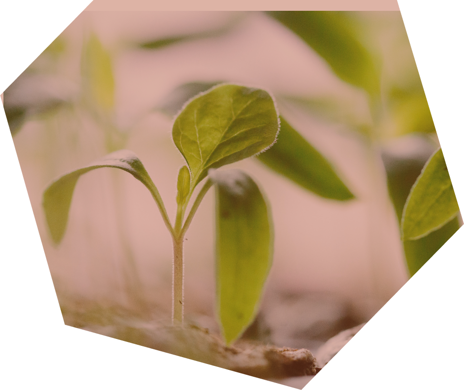
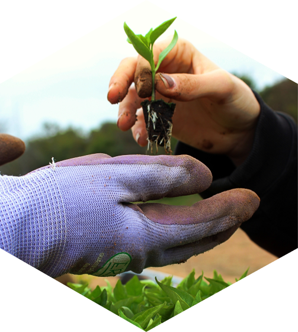
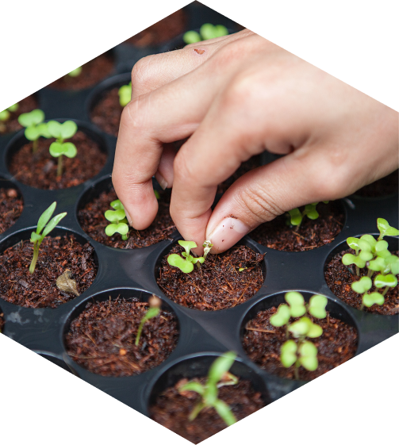
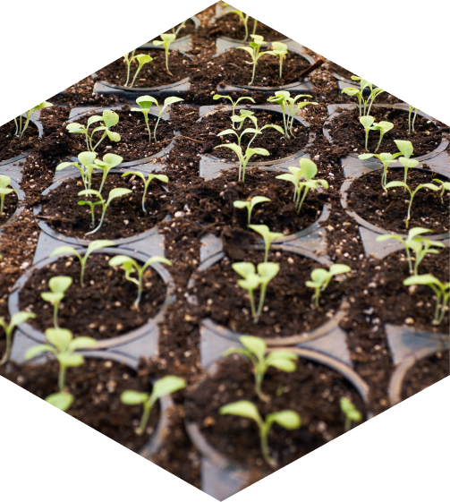

Sustainbility Pledge
We are dedicated to creating a lasting positive impact across our entire value chain, safeguarding the well-being and quality of life for both current and future generations.

Aligned with the United Nations' sustainability goals, our sustainability plan rests upon three foundational pillars.
Social
Creating a Positive and Secure Work Environment for Our Employees and Enriching Nearby Communities
Our commitment extends beyond our workplace to have a positive influence on the communities surrounding us. This encompasses:
- Social Initiatives: We actively support projects centered around education, agriculture, and sports that contribute to the well-being of our community.
- Employee Involvement: We engage our employees in social endeavors, encouraging their active participation in projects aimed at making a meaningful impact.
- Sustainable Agriculture: We focus on sustainable agriculture initiatives tailored for producers, empowering them with knowledge and practices that promote both economic viability and environmental health.

Environmental
Embracing Sustainability in Our Operations for Environmental Compliance and Excellence Our commitment to sustainability drives our operational practices, focusing on:
- Waste Management: We diligently manage waste, adhering to responsible practices that minimize our environmental impact.
- Renewable Energy Utilization: When feasible, we prioritize the use of renewable energy sources to power our operations, reducing our carbon footprint.
- Innovative Grain Packaging: We actively explore environmentally sustainable solutions for grain packaging, aiming to minimize waste and environmental strain.
- Controlled Atmospheric Emissions: We rigorously manage and control internal atmospheric emissions, ensuring that our operations uphold high environmental standards.

Governance
We are committed to transparency in both our internal sustainability efforts and our partnerships with external collaborators. Our objectives encompass:
- Promoting Low Carbon Production: We actively encourage the cultivation of low carbon sunflower, aligning our efforts with sustainability goals and ecological responsibility.
- Cultivating Internal Sustainability Culture: We strive to fortify a culture of sustainability within our organization, fostering a shared commitment to responsible practices.
